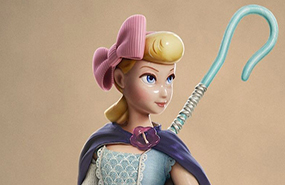
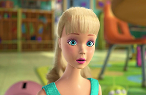

Sobre nosotros
Somos Mercería Bo Peep
Abierta desde 1990 esta mercería fue creación de mi madre Anastasia, quien con mucho esfuerzo y constancia, creó en Buenos Aires una de las mejores mercerías, con un gran surtido de artículos, y donde nuestra prioridad es darle a nuestros clientes el mejor trato.
Ella tuvo la ilusión de que fuese para mi más que un simple trabajo, y poco a poco así me formé, haciendo que día a día Mercería Bo Peep sea parte de mi.
Hoy por hoy después de el crecimiento de este emprendimiento, somos dos las que formamos parte de el equipo. Barbie es mi mano derecha con la que con mucha ilusión y dedicación seguimos con esta maravillosa profesión que saca de nosotras nuestro lado más creativo.

Mi nombre es Be Poop, tengo 24 años y desde muy pequeña comenzó mi formación en el corte y confección. Me apasiona el mundo de la moda. Amo mi trabajo porque me impresiona como en una mercería puede existir una pieza para cada necesidad diferente, desde texturas, hasta colores y formas distintas.

Mi nombre es Barbie, tengo 23 años, y hace 3 años que comencé a trabajar acá. Adquirí un gran conocimiento a lo largo de estos años de trabajo en la mercería. Gracias a Be Poop descubrí mi pasion por el punto y crochet.